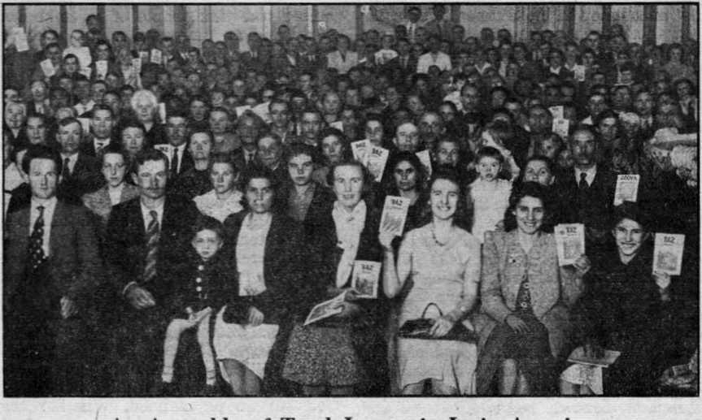
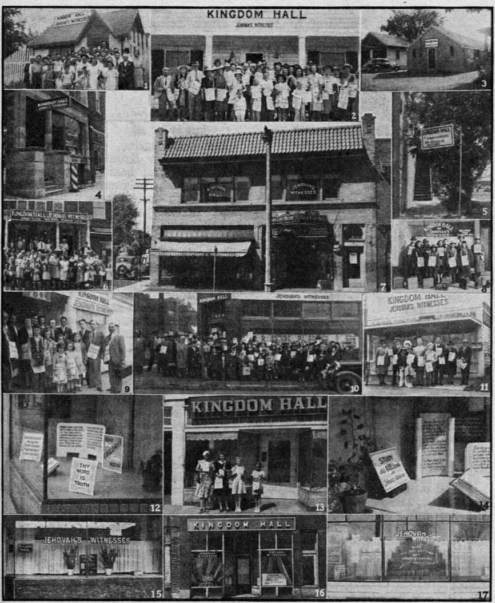

The Strange Case of Darlan and Giraud 3
The French Empire in the Sudan and
Vindication of the Bill of Rights
When America Ceases to Be America
“Thy Word Is Truth”
The Terrible Huitzi)<>|*ochtli
“The Tender Mercies of the Wicked”
Assembly of Trnth-Ixivers iu Latin America 26 “Kingd.Mii Halls”
Spelling in Junior High Schools
Presenting “This Gospel of the Kingdom”
“Christian” Su|iersliti«>ns in the Visayas
The Voices Were the Voices of Demons
ov«*ry ©thor W«*<1noMtay by WATCHTOWER BIBLE AND TRACT SOCIETY. INC. 117 Adams St.. Brooklyn. N. ¥.. U. S. A.
OFFICERS President N. II. Knorr
Secretary W. E. Van Amburgh
Editor Clayton J. Woodworth
Five Cents a Copy $1 a year in the ITnirod States $1.25 to Canada and all other countries
NOTICE. TO SUBSCRIBERS
Remittances: For your own safety, remit by postal or express money order. When coin or currency is lust in (he ordinary mails, there is no redress. Remit tun«-»s from countries other than those named below m:iv !••• made to Un- Brooklyn ollirv, but only by International |M>slal money order.
Receipt of a now or renown I subscription »' ill be acknowledged only when requested. Notice of Expiration is sent with the journal one month befor-- subscription expires. Please renew promptly to avoid loss of copies. Send change of address direct to us rather than to the post office. Your request should reach us at least two weeks before the date of issue with which it is to take effect. Send your old :is well as the new address. Copies will not be forwarded by the |s>st ofllec to your new address unless extra postage is provided by you.
Published also in Greek, Portuguese, Spanish, and Ukrainian.
OFFICES FOR OTHER COUNTRIES
England 31 Craven Terrace. London. W. 2
Australia 7 Beresford Bond. Strathfleld. N. S. W.
South Africa 623 Boston House. Cape Town
Mexico Calzada de Melchor Ocampo 71. Mexico, I). F. Brazil Csiixit Postal 1319, Rio de Janeiro
Argentina Calle Honduras 5646-48. Huenos Aires
Entered as second-class mutter at Brooklyn. N. Y..
under the Act of March 3. 1879.
Notandum
Tension in Czechoslovakia
THE reVived Inquisition found the land or John Huss, forerunner of the Reformation, as determined to resist oppression as in the days of yore. The Czechs were reported burning down their granaries at night and forming angry hunger marches by day. They slowed down their arms output as much as 50 percent. The Czech women showed their opposition to the Catholic Hitler’s rule by parading the streets with empty market baskets turned bottom side up. The lamp-posts were found in the morning with the word “Reserved” painted on them, meaning that when the day comes the Czechs will hang the Pacelli-Hitler Gestapo thereon. Mysterious fires broke out in munition shops and oil refineries. Railway tracks were torn up and trains wrecked. Telegraph wires were cut. Explosions took place in factories and chemical establishments. Strikes were prevalent and drawn out, even after the leaders were arrested. To try to correct the situation, one of the head Inquisitors, Reinhard Heydrich, was sent to Czechoslovakia to extend to that country the tortures he had so successfully applied to liberty-lovers and truth-lovers in Germany itself. He was a capable man, as torturers go. He is accredited with having tipped off Hitler to murder his friend Roehm, von Schleicher, and many others; also, this was the man that helped von Papen to obtain from Schuschnigg the documents covering Hitler's youth and war record. He it was that caused thousands of patriotic Norwegians to ho thrown into jail. He was but 38 years of age, and, next to Himmler, the most dreaded man in Nazidom, when a bomb exploded in his car, killing the driver, wrecking the car and wounding Heydrich mortally. His death followed, and was cruelly avenged by numerous executions, including two entire villages, Lidice and Levzsaky, and, mercilessly, many women.
“And in His name shall the nations hope.”—Matthew 12:21, A.R.V.
VolumeXXIV Brooklyn, N. Y., Wednesday, April 14, 1943 Number 615
The Strange Case of Darlan and Giraud
THE people of the world had spread before them in the closing days of 1942 a story that has peculiar interest for humanity in these days of stress and trial. '
Here is a man entrusted with one of the greatest fleets of war vessels upon the face of the earth; he is a Fascist in his sympathies, as are most of the military leaders of France. He is named (at one time) as the successor of Marshal Petain. He is well acquainted with another man, a general in the French army, who, at the time, is imprisoned in a fortress in Germany.
A few weeks elapse. The Fascist Admiral Darlan is captured by the American armada in Northwest Africa. He greets the Americans as friends. They in turn put him in control of the French possessions which they are liberating. The imprisoned general meanwhile escapes, and makes his way to Africa. Darlan is disowned by Petain. Darlan makes the aforetime and twflce-imprisoned Giraud his next in control. Then Darlan is assassinated by a Fascist youth who feels that he has betrayed the Fascist cause. He dies on the way to a hospital, meantime being “blessed” by a priest, and not at all unlikely (no information on this) by the same priest that “blessed” the gun of the murderer. (Th,e assassin who murdered President Obregon of Mexico first had his gun “blessed” by a priest, to make sure the bullet would find its mark.) And so Giraud the oft-imprisoned steps into Darlan’s shoes in Northwest Africa. Meantime the French fleet, by Darlan’s orders, was scuttled and went' to the bottom of the port of Toulon. Now for a'few more details of one of the strangest true stories ever told.
No one has accused Admiral Darlan of being enthusiastic for the French < Republic. He looked upon the French fleet as his own possession, though it was paid for by the French taxpayers. It was considered capable of facing the Italian and German navies together. He was considered a valuable and capable man. On February 10, 1941, at Vichy, France, Marshal Petain appointed Jean Darlan (already miiiister of the navy and of foreign affairs) next in line of succession to himself as chief of state. Darlan hated Britain with the most bitter hatred because of the death of his son, whom he claims lost his life when the British blew up a bridge more quickly than was expected. Shortly after his promotion he claimed that the Germans were sometimes more generous and humanitarian than the British, and cited food facts in . support of that contention.
In May, 1941, Admiral Darlan stated that France, in choosing collaboration with Germany, had chosen life in the “New Order” instead of national disintegration. He was accused in British papers of linking France’s fate with that of Germany and insisting in carrying the French colonies along with him. Wythe Williams, usually well posted, had two pages in Liberty magazine, July 26,1941, entitled “How Darlan Sold Out France to Hitler”. That shows how risky it is to be a comriientator on the news of the day.
But it cannot be denied that Darlan visited Hitler May 9, 1941; that he then congratulated him on his “victories” in Greece and Africa, and stated that France knew she had nothing to expect I from the British; and he seemed to be * delighted with Hitler’s generous treatment of a fallen foe. Later, he said he was merely trying to make the best of a bad situation. No doubt there was some truth in that statement. The following month the New York World-Telegram said of Darlan that he was “generally regarded as strongest of French proponents of collaboration with Hitler”.
Darlan’s friends described him as having a horror of France’s parliamentary political system; i. e., he was a Fascist at heart and hated the French Republic. A poor kind of man to have full control of the French navy, but having some excellent personal traits. He had a ready smile, a great capacity for work, and initiative and courage. He may properly be described as a French military man, convinced, as many such are, of the wisdom of Fascism.
Early in 1942,. French ships carried French war materials from French North Africa to the Axis fighters in Libya. The names of the ships are known, and the cargoes that they carried. Admiral Darlan knew of these shipments. Two of these vessels, leaving Marseille weekly for African ports, with aid to the Axis powers on board, were the Sphinx and the General Metzinger. In April of the same year, Vichy France made Darlan admiral for life. A week later he was given command of France’s military forces. Hitler, Petain, Laval and the pope considered him safely Fascist.
The landing of the American armada in Northwest Africa was one of the best planned and executed surprise parties in history. President Roosevelt, author of the plan, issued a stirring appeal to the French people not to oppose his - intervention in their behalf) promising them that as soon as the German-Italian peril is'removed, the Americans, lifelong friends of the French people, will at once withdraw from all their territories. As luck would have it, Darlan was in Algiers on a tour of inspection when the Americans arrived, and in two days was in their hands. One of his first acts was to broadcast orders to “his” fleet of 62 vessels at Toulon to beware of German attempts to seize it. The next day he announced, in the name of Petain, that he had assumed full responsibility for French interests in North Africa.
A week after the Americans had landed in North Africa, Petain figured out that he had made a mistake after all in heaping so many honors on Admiral Darlan; so he declared him outlawed. But as Darlan was in North Africa, and right at the center of things, and had the American armada back of him, the noise from Vichy was considered merely as the wail of an old man who had nothing left but his socks and his “honor”. The Germans had everything else. Darlan said (truthfully, too) that Petain was dominated by the Germans and should not be heeded, as the things he was supposed to be saying might not have been said by him at all.
The American newspapers, most of them, having been wrong on everything else, thought to make it 100 percent by roasting President Roosevelt for permitting Darlan to make use of the power that was in his hands. But the president has no more use for the press than they have for him; so that makes it a fiftyfifty. It was comical to see the columnists trying to figure things out, and do their usual 100-percent-wrong prognosticating. William Philip Simms seems to have more common sense than most of them, and in the heat of the disputations he summed it up like this:
Whatever else one may say of the French admiral, he has been of tremendous service to the United Nations. But for him and his followers we might still be fighting to hold on to precarious beachheads. Tens of thousands of our boys might have had to pay with their lives for the foothold which General Eisenhower’s battlefield diplomacy gave us at so little cost.
Probably, without his knowing it, the fact that General Eisenhower’s mother is one of Jehovah’s witnesses has been of real benefit to his brains. He is, no doubt, fully aware that there is not the least shadow of truth in either the “eternal torture” or the “purgatory” myth, and certainly no human can reason sanely who holds to either of those scarecrows of religion.
It wasn’t only the- American newspapermen and the British politicians that were confused about the extraordinary events that took place in Northwest Africa. The Germans were as badly tangled as anybody. The Russians were chasing them in the Caucasus, and the British were chasing them in Libya, but they finally woke up and poured into Unoccupied France and made for Toulon, where the French war fleet of 62 vessels lay at anchor, and with most of the ships unable to go anywhere, as they were without fuel.
Darlan ordered them to escape to harbors of the United Nations or to scuttle. And though a very few submarines made a getaway, the rest of the vessels were scuttled, with the loss of many valuable lives. Rather than see their ships fall to the Germans, in numerous instances the vessels fired upon each other. The arsenal was blown up and most of the ships were destroyed.
The administration of affairs in Al-a giers is not that of a republic. The Jews there, 100,000 of them, have been dis-franchised since September, 1870. And in the school of medicine at Algiers the Jewish students are kept at arm’s length by the other students. So says Pertinax, in the Baltimore Sun.
It is to Admiral Darlan’s discredit that he was the man who ordered Indo-China not to resist the Japanese; also when he was with the clique at Vichy France he helped to establish the anti-Semite laws.
Just before he was assassinated, Admiral Darlan made the statement that he hoped to save French Africa and to free continental France by helping the United Nations, and, after that was done, to retire to private life. His assassination by a Fascist who apparently considered him a betrayer of the “Holy” Roman Empire cause was justly described by President Roosevelt as plain murder in the first degree.
The experiences of General Henri Honore Giraud, who now occupies the most important position of any Frenchman, are as singular as were those of Admiral Darlan. Taken prisoner in World War I, he escaped and was never recaptured. Again taken prisoner in World War II, he escaped a second time and was never recaptured. On the last occasion, having made his way back to Vichy France, the Germans offered to exchange 70,000 war prisoners for him if he would return to prison and show them how he got out, and they would give him his liberty in addition. But he said he would not trust the word of any German.
He promised Vichy France that he would not engage in any political activities if they would allow him to remain in his own country. Meantime he had got in touch with the United Nations and, with their assistance, escaped once more, this time to North Africa, and came near getting drowned, but escaped for the fourth time. Before Darlan died he named Giraud as this successor in North Africa, and all factions are now working'with him for the deliverance of France from the German yoke.
Vichy France claims that before General Giraud made his escape from what was then Unoccupied France he wrote a letter to Petain, concluding by giving his
word of honor as an officer that I will not do anything that could in any way embarrass our relations with the German government or impede the work with which you have entrusted Darlan and Laval on your high $ authority.
* Until he tells how he did it, the escape-of General Giraud from the Koenigstein Fortress in Saxony into Switzerland and thence into Unoccupied France is regarded as inconceivable. The fortress is situated at the top of a rock 1,200 feet high, with extremely steep sides. The only entrance is blasted through one of these steep sides. He is supposed to have slipped do-wn a rope. If he did, it must have been an unusually long one; and how did he get it? Moreover, he is .63 years of age, and that would be quite a stunt for a man half that age.
Some features of General Giraud’s rise from the state of a prisoner of war to that of supreme power in one of the greatest governments of the world remind one of Joseph, who went down into Egypt as a -slave, and subsequently became a prisoner, and rose from that position to be, next to Pharaoh, the most important man in the then most important country in the world.
We remember also the thousands of imprisoned witnesses of Jehovah who are still in prison in Germany and Mississippi and other benighted lands, and who in God’s due time are sure of an even greater deliverance than came to this worldly warrior that suddenly took the place of Admiral Darlan.
Petain and the Hierarchy
IN HIS broadcast of a.year ago (January 1, 1942) . Marshal Petain, selfdesignated dictator of Vichy France, made the following statement:
The new order which is about to assume its place cannot be founded on anything but a severe internal order, one which demands from all the same discipline founded on the pre-eminence of labor, the hierarchy of value, a sense of responsibility, respect for justice and mutual confidence.
What he really meant by the word “hierarchy” is simple enough, though what he meant others to understand by it is not so clear.
It has been a regular love feast between Petain and the Vatican ever since the night when he was catapulted into his present job.
While the Jesuit net for the French Republic was being stretched, French ecclesiastics advertised, as blind, that if Britain and France won out in the war against Hitler they would see to it that the French people pay for the victory by the erection of a church to
“Our Lady, Queen of Peace”. But Hitler womthe victory, and, as soon as fhey had been robbed of everything, word went out that the erection of the church would proceed as originally planned. Petain showed his sympathy with this barefaced burglary by being the first French president ever to make a visit to Lourdes, one of the main centers of Hierarchy hypocrisy in France. _
French patriots, and there are many such, are taking notice of the fact that Petain never misses “mass” on Sunday and goes out of his way to show his refepect for the Hierarchy. A comical statement of the Religious News Service, cabled to the New York Times (July 20, .1942), is that “from the upper ranks of the Catholic clergy he obtained a support which, at times, has been enthusiastic; at times, prudent and reserved”. Naturally, he obtains a support from the people for whom he is working and whom he has helped to destroy the French Republic. The article continues, “As long as Marshal Petain stays, a certain sort of
clerical pressure can make itself felt.” Naturally, he has to do what the boss says, whether he likes it or not.
Now is a good time to remember once again the joy with .which the Vatican organ Osservatore Romano, on the night of July 8, 1940, hailed the induction of Petain into office. In condensed form this first appeared in a copyrighted dispatch by John T. Whitaker in the Cleveland Press and the Chicago Daily News:
Rome, July 9.—The first political pronouncement of the Vatican since Italy’s entrance into the war as Hitler’s ally is a fulsome indorsement of Premier-M a r s h a 1 Henri Philippe Petain’s capitulation to Germany and his efforts to reorganize France along Fascist lines. This departure from the policy of self-imposed silence was offered in last .night’s issue of the Osservatore Romano, the official Vatican newspaper,
A letter addressed to Marshal Petain by Catholic Youth organizations in France, who pledged their support to his new government, was the occasion for .the Petain comment. Of Petain they wrote:
“This brave and good marshal personifies, more than any other man, the good qualities of his race. The youths turn to this old octogenarian to invoke the rebirth of their country, displaying the happy intuition of perennial youth, an intuition which the religious, Christian and Catholic faith of the marshal can understand. Petain must obtain for his sick country a prodigious spiritual cure, for this is the best rebirth and the best dawn of a new, radiant day, not merely for France, but for Europe and the world.”
At the time that panegyric was written, it looked very much as if the infamous Catholic Adolf Hitler would soon be boss of the entire world. Even yet he hopes to put across his “Holy Roman Empire” stunt, but probably by this time the man who w’rote the foregoing drivel is sorry that he laid it on so thick. It is slightly embarrassing to boost in such unlimited fashion a man who has turned
out to be merely a scarecrow attached to a phonograph. .
After waiting nine days, to see how the original panegyric would take with the public, word came from the Vatican that the pope had instructed the apostolic nuncio to France, Monsignor Valerio Valeri—
to support the government of Marshal Henri Philippe Petain in the French reconstruction. The Holy See is convinced Petain and Pierre Laval, “strong” man of the Petain government, will assure the reconstruction in line with policies meeting the approval of the church. [That is, Petain and Laval will do as they are told; and the facts show that they do.]
Have you ever noticed with what promptness the pope formally recognizes the death of any republic and the turning of its affairs over into the hajids of a Catholic dictator? You might remember in this connection Portugal, Spain, France, and Germany.
If you don’t want to believe anything else on this subject you will at least be interested in this skit from the magazine The New Age:
The Roman Church is also totalitarian in structure and intolerant in its ideals. Msgr. Fulton J. Sheen, professor of fundamental theology at Catholic University, Washington, D, C., even boasted of the 'intolerant, dogmatic and uncompromising attitude of the Catholic Church’ in a sermon early this year (1940).
Old Cronies Working Together
The idea that he was going to act as accoucheur when the French republic was reborn as a totalitarian monstrosity of the new order made a big hit with Marshal Petain. After he had been in his new job five months he was given a great demonstration at Lyon, which has been a Catholic stronghold ever since the slaughter of the Waldenses and Albigenses. Petain w’as made honorary canon of Lyon cathedral, and said, “I have the impression that France has been reborn.” He has a high opinion of Petain.
Vichy France’s ambassador to the Vatican made the statement at Rome: “In our opinion there is- a visible correspondence between the motives of hope, which derive from the action of the Marshal and of the charity of the Pontiff.” This was after Petain had been in t his new job seven months, and shows that up to that time he had been obedient and had done the work cut out for him as well as could be expected from a man of his advanced years. The language, of course, is diplomatic; i. e., the words are upside down and back end to and inside out, as is customary in that line of business. But you can see what he meant. t
The London Catholic Herald contains a picture of “"Marshal Petain seen in Vichy church when he was present at a mass said for the war victims of France”. It is too bad that Hitler, who produced the victims, could not sit by his side, to make the picture complete. In that case the altar boy back of Petain should be shown with horns. Cardinal Gerlier praised Petain effusively.
Two months later the same paper contained a three-column scarehead reading, “Vatican radio praises Petain’s efforts to heal breach between public and religious affairs.” Whenever you see the Vatican making special efforts to pin a wreath of glory on somebody, all you have to do is to remember the great honors conferred on Martin T. Manton, who sold justice at so much per, and caused Judge Rutherford to do time in Atlanta penitentiary before justice got around to land Manton himself in the penitentiary at Lewisburg, Pa. Manton was made, a knight of Saint Gregory the Great. Gregory, by the wrny, was the demonized inventor of the money-making “Purgatory” racket, of which the Bible, God’s Word, says nothing at all, and of which Peter, the alleged first pope, never heard or said a word in all his life.
Archbishop Valerio Valeri says that Petain has carried out a national revolution, by which Valeri means that he has killed the Franch Republie.-Even an archbishop will tell the truth once in a while.
The French Empire in the Sudan and Elsewhere
THE territory that goes to make up
French West Africa and French Equatorial Africa is larger than the whole United States and is filled with great possibilities; so much so that it is sometimes said that whoever controls Lake Chad, in the center, will control Africa and control the world. Of course, that is nonsense, but the politicians do not know that Christ Jesus has been commissioned for that position. They think it is theirs, to have and to hold, and to do wuth it as they will. Earth’s most far-sighted and unscrupulous politicians are the Jesuits, and they are moving everything to gain their objective of w’orld domination.
A hundred years ago the French and all the other maritime powers were help-
ing themselves to territory wherever they felt like it. Get a map of Africa, take a look at it, especially the west coast, and notice, one after another, Morocco (French), Rio de Oro (Spanish), Senegal (French), Gambia (British), Casamanca (French), Guinea (Portuguese), Guinea (French), Sierra Leone (British), Liberia (independent), Ivory Coast (French), Gold Coast (British), Dahomey (French), Nigeria (British), Cameroons (French), Rio Muni (Spanish), Gabon (French), Kabinda (Portuguese), Congo (Belgian), Angola (Portuguese), and South Africa (British). ■
The French were the first to appreciate the hinterland. They came in via the Senegal river about 1885 and finally came over the divide into the magnificent region of the French Sudan to the south and west of Timbuktu, and visions of a great empire began to take form. Subsequently the French went around back of all the coast settlements except the three last named, cutting them off from further development, with the result that France is recognized in every atlas as the ruler of the vast country, aside from the Sahara desert, which stretches from Algiers to the Congo river and from Cape Verde almost to the river Nile.
This territory includes much of the valleys of the Senegal, Niger and Congo rivers, as well as the streams that flow into Lake Chad, and the lake itself. Without undue publicity the French went about the pacification and civilization of this great area, and, though much remains to be done, much has been done.
In Dahomey the French have 1,800 miles of modern highways on which, in normal times, automobiles flit back and forth. The natives take to them as a duck to water. Like Jehu, they drive furiously. It was in Dahomey, in bygone years, that the French had to conquer an army of 15,000 Amazons, women trained for warfare, quite as strong as and more ferocious than the men. Dahomey was at one time a great center of the slave trade.
In their conquest of the hinterland the French had to deal with not less than fifty groups. They found some very extensive areas almost deserted, though only needing intelligent cultivation to support vast numbers of people. In other districts there is a dense population.
The Niger river, length 2,500 miles, rises within 175 miles of the Atlantic ocean, not far from the source of the Senegal river, and sweeps around a great semicircle back into the Atlantic. At the central point of the great arc described by the river’s course, in the center of a fertile prairie, lies. Timbuktu.
Immense and fertile plains and forests Stretch away to the east and west and south; and from this territory now come enormous supplies of oils, gums, ivory, and ostrich feathers.
Timbuktu is at the head of navigation of the Niger, and a natural collecting and distributing depot for the products of the region. For generations the Arabs have carried the products northward to Tripoli, across the Sahara, making two round trips per year. The French have been taking most of their goods out by way of the Senegal, or down the Niger through British territory. They have built a railway across the Niger-Senegal divide, intended to be extended to Timbuktu and thence to Algeria.
The Arabs who make a living by carrying ivory and other treasures across the desert carry dates with them as their sole food, counting out just so many to be taken at each meal, and not varying the number. They know, in advance, to a certainty, how many meals they have provided for.
In the western part of tropical Africa coffee plants thrive so luxuriantly as to form thick woods.
In the vast areas under their control the French have. discouraged cannibalism, but it will be some time yet before it is extinct. Slavery is waning. Fetishism is greatly decreased. Some of the secret murder societies have been broken up. Tribal wars are at an end. Polygamy is much decreased. The people are learning to read and write; soon all will be like Europeans, but maybe not as savage.
It is claimed that the Hausa Negroes of. the French Sudan have the most beautiful language in the world, and that these Negroes themselves are as stately as their language, spoken by some 20,000,000 throughout the Sudan and as far as the Mediterranean. As slaves they were prized as of the highest type. They are crossed with Semitic stock, and are Mohammedans, mostly.
There are four quite well defined rain belts. The Sahara averages under ten inches a year. The northern Sudan has from ten to twenty inches a year and stretches clear across the continent from Cape Verde on the Atlantic to Somaliland on the I ndian ocean. Next is a great belt 500 miles wide, mostly in French hands, which has up to sixty inches a year and would support uncountable millions. The heaviest rains of all, ranging up to 120 inches a year, are in the heavy-forested Guinea coast and Congo regions, much of which is also in French possession.
The reason that the Guinea coast is so unhealthful is largely that the people there do not. know how to live. The natives suffer terribly from constipation; they eat no greens; they know nothing of sanitation; they do not know how to secure pure drinking water. When sick, they go to a medicine man for some magic brew or incantation.
There are sacred groves where, occasionally, without the knowledge of their white rulers, young men are sacrificed, ‘for the good of the tribe.’
Snake stew is a savory dish on the Guinea coast and tastes very good indeed; so the snake-eaters claim.
French Equatorial Africa
French Equatorial Africa is larger than the part of the United States east of the Mississippi, by several thousand square miles, and is laden with natural riches of every sort. It was entered and seized via the Congo and its tributary the Ubangi. At the big bend in the Ubangi the French started and built a line of forts through to Lake Chad, five of them, and from these, as centers, the whole northern part of this vast area was brought under control. Telegraph lines were installed to outlying points, and then the wireless, and the result, in a generation, was civilization.
There are cannibals in French Equatorial Africa, in some places. And the worst of it is that some of these cannibals are said to be fine fellows to meet. They are very pleasant, but they are fond of meat, and fresh meat is hard to get in the tropics. Some of the tribes buy prisoners of war, holding them in reserve, killing and eating them as they are needed. Others eat only their enemies; still others eat only because they wish to assimilate the strength and other good qualities of those that have passed away. It is all very hideous, almost as much so as the diabolical doctrine of “eternal torture” believed by some Aryan savages in America and Europe.
Like his white brother, the African native has often been deceived by demons. As in America, the black brother in Africa is easily misguided and misled; but for the most part he is an intelligent, simple-hearted, inoffensive man.
Portions of French Equatorial Africa have a rainfall of more than thirty feet a year. Python-worship is common, the people believing that the souls of dead people of high rank visit their relatives in the form of snakes.
Sleeping sickness, spread by the tsetse fly, has ravaged portions of French Equatorial Africa and given the French medical fraternity much concern. Another thing that gives the French doctors plenty of concern wherever French soldiers go is what is known in Africa as ‘the Frenchman's disease’, syphilis.
One whole tribe migrated from the healthful highlands into the notoriously unhealthful lands near the mouth of the Congo, in the hope that they might all die, on account of the ravages of liquor and of this white man’s disease in their midst. Instances are on record where these poor natives have walked four hundred miles to a hospital for treatment.
It is believed that the women of the Sara Kyabe tribo, French Equatorial Africa, would he the finest, looking in all Africa but for the disks, often eight inches in diameter, which are inserted into their lips. The Sara Kyabe women used to fetch the highest prices on the
slave market, and to preserve the tribe the elders decided the women must all be disfigured. .
At one time it was a common fear among the United Nations that Hitler, when he gained full control of France and her possessions, would use Dakar as a base from which to jump his planes 1 to South America. Now that fear has passed; for Dakar, though it resisted attachment to the cause of General de Gaulle, and spilled some blood doing it, came over into the United Nations camp voluntarily when Admiral Darlan suggested it.
Dakar is not a large place (only 42,000), but that is no measure of its importance from a military point of view. In the winter season it is cool and healthful; in the summer it is beastly hot. There are occasional tornadoes, lasting perhaps not more than half an hour, but frequently leaving casualties and property damage in their wake. Of this phenomenon a memorandum says:
When the storm is over, hundreds of young natives, most of them completely naked, swarm into the flooded streets, laughing and singing, to bathe in the pools and streams that will be gone in another hour. .
About six-sevenths of the population of Dakar are Negroes, tall, dark, and said to be excellent soldiers. Some of these are Catholic, but most of them are Mohammedans. ,
It seems incredible, but there are Negroes in French Africa that are so low in superstition that they talk like American and European college professors and doctors of divinity. The poor things seem to actually believe that they are descended from monkeys. How they could get into this confused state of mind without attending any college or university is hard to understand.
Here is something that would bother the professors. The pygmies of French Africa, from long acquaintance with the gorillas, have learned the meaning of all the gorilla ejaculations and imitate them so successfully that they are safe in their midst, whereas the gorillas attack fullsized Negroes. Whites have not yet been able to master the significance of the various gorilla sounds or to imitate them.
Remembering that God hath made of one blood all nations on the face of the earth, the white college professors should not be downcast because the little black pygmy brothers in Africa can do things which they are unable to perform or even to understand. They can do things which the pygmies cannot do. Thus, they can read the books of Charles Darwin and others, which explain that they are blood brothers of the little blacks, and they can point with pride to the airplanes and tanks and other accouterments of civilization of which the pygmies must have very inadequate ideas.
The De Gaulle Mix-up
Almost everybody knows about the De Gaulle mix-up, but that seems to have pretty ■well straightened itself out with the death of Admiral Darlan and the acceptance by the De Gaullists of General Giraud as Darlan’s successor. De Gaulle himself is an ardent Catholic. The French islands in the Pacific, New Caledonia, New Hebrides, and Tahiti, rallied under him when Hitler established his Vichy front for breaking down the resistance of the French people. And French Equatorial Africa followed.
De Gaulle is an ultra conservative in French politics, and that would mean that he inclines towards Fascism. He had no sympathy with the Popular Front, when, in the days of Leon Blum, that was trying to rescue France from the 200 Big Business and Big Church families that finally helped cause her ruin.
De Gaulle has Churchiirs confidence, who said of him:
His judgment has been found extremely sure-footed. Our opinion of him has been enhanced by everything we have seen of his eondiiet in circumstances peculiarly and per-plexingly difficult.
The people of the United States seem to be pretty well pleased with the w’ay their State department has handled French affairs since the seizure of continental France by Hitler. They have consistently stuck to the formula of deal-ting in French possessions with those in * control on the spot.
An exception seems to have been made in the islands of St. Pierre and Miquelon, in the gulf of St. Lawrence. Fighting French forces seized these islands in December, 1941. The people seemed pleased; 650 of them voted for De Gaullist government, while 10 wanted collaboration with the Axis. Uncle Sam was embarrassed because the apostolic prefect there, and the real boss of the islands, wanted collaboration. Because of this, Laval, named him an officer of the Legion of Honor. In view of what Laval is and what he stands for, this is one of the worst disgraces that could come to any man.
Vindication of the Bill of Rights
AMERICANS will rejoice at the courageous fight that is being waged on the home front in behalf of the righteous principles for which the flag of the nation stands. Those who abhor Fascistreligious mob rule will rejoice at every success in plugging up the breaches which un-American elements have made in the bulwarks of American rights and liberties in recent years. One such timely repair of the "dikes protecting this country from the swelling tide of religious vindictiveness and contempt for law and persecution of minorities is the decision of January 6 of the United States Circuit Court of Appeals for the Fourth Circuit.
This exemplary decision was rendered in the case of Martin Louis Catlette, deputy sheriff of Nicholas county, West Virginia, the appellant, as against the United States of America, the appellee, The case was tried before Circuit Judges Parker, Soper, and Dobie, at Charleston, West Virginia, and the opinion was read by Judge Dobie. The opinion states at considerable length the circumstances leading up to the case.
June 29, 1940, in the exercise of their right as American citizens to circulate a petition appealing to established government for the redress of grievances, a number of Jehovah’s witnesses, native-born citizens and residents of West Virginia, proceeded to Richwood in said state to call at the homes of its residents and secure the names of all willing to sign a petition which was then being circulated all over the United States in behalf of freedom of assembly and worship of God Almighty. Because of threats made the previous week, and in the interests of law and order, these petitioners went to the Towp Hall to-presenLto the mayor a--letterrequesting police protection while carrying on their lawful work as Jehovah’s witnesses.
They were met by the city chief of police, Bert Stewart, and the deputy sheriff of Nicholas county, M. L. Catlette. In view of the mayor’s absence the letter was delivered to Police Chief Stewart that they might know of the intended activity of the group and might offer the proper protection which it was their sworn duty to render. The delegation of three who presented the letter were ushered into the mayor’s office, which the deputy sheriff, Catlette, used in the collection of taxes. There Catlette detained these witnesses without due cause. He was wearing his official badge at the time, and Police Chief Stewart acted as doorkeeper. As to what followed we quote the opinion:
Thereupon a mob gathered estimated to contain upwards of fifteen hundred persons, and other members of the American Legion [of which Catlette is a member] arrived; that Catlette called other members of the American
Legion by phone, saying among other things, ‘We have three of the S---- o---- B----’s
here and we are rounding up the . others’; that one Louis Baber, also a member of the local American Legion Post, brought the other four Jehovah’s witnesses into the room; that the defendant Catlette thereupon removed his badge as Deputy Sheriff of Nicholas County, West Virginia, and stated in substance and effect, ‘What is done from here on will not be done in the name of the law’; three of the Jehovah’s witnesses were forced to drink eight ounces of castor oil and another, who protested and at first refused, was required to drink sixteen ounces of castor oil, after having been threatened by a doctor with a stomach pump; that said seven Jehovah’s witnesses were thereupon tied along a large rope, each being fastened thereto by his left arm and some three or four feet removed from each other on the rope; that’so tied they were marched to the front of the Richwood Post Office on the top of which was flying an American flag; the defendant Catlette read the preamble to the American Legion Constitution and all persons present saluted the flag, except the Jehovah’s witnesses;
That said Jehovah’s witnesses were thereafter marched through the streets of the Town of Richwood and out of it? corporate limits, yet attached to the rope, and there, released from the rope, restored to their automobiles, which bad been damaged, and their other property, which had been covered with castor oil and uncomplimentary inscriptions, and advised never to return;
That they entered the office of said Deputy Sheriff about 9:30 in the morning and were released between 3 and 4 o’clock P. M. in the afternoon of the same day, and except for said castor oil, none of said Jehovah’s witnesses received either food or drink during said hours, nor was permitted to go to a toilet;
That between said hours no request for protection was made of the defendant Catlette and at no time did the defendant Catlette protect the Jehovah’s witnesses from the acts administered to them, but actually participated in the infliction of the same, and the only protest made during the time of such treatment was made by the Jehovah’s witnesses who originally refused to drink the castor oil.
In due aceord with the laws providing for the punishment of those who infringe upon the rights and immunities of a free people, and for the protection of Americans from like further violations of law and order and official misconduct, Jehovah’s witnesses exercised their right and privilege as citizens and Christians to bring this serious matter into court. 'When, in due course, the ease was prosecuted before the United States District Court and a jury of twelve men, it resulted in a prompt conviction of Deputy Sheriff Catlette and Police Chief Stewart. A summary of the case and details of the conviction have been published in a former issue (No. 597) of Consolation.
The two lawbreakers squirmed under the conviction, and subsequently the case was appealed to the United States Circuit Court of Appeals by Deputy Sheriff Catlette. The three-judge court’s opinion was written by Judge Dobie and joined in by Judge-Parker, the latter being the author of the West Virginia flag case opinion of October 6, 1942. (See Consolation No. 604, page 21.)
Deputy Sheriff Catlette’s argument before this august court sprang from his ill-conceived notion that an officer of the law can “divorce himself from his official capacity merely by removing his badge of office before embarking on a course of illegal conduct, and thereby blithely absolve himself from any liability for his ensuing nefarious acts”. Naturally he would refuse to arrest himself thereafter when he pinned his badge back on again, just as he refused to arrest any others of the mob. On such Dr. Jekyll and Mr. Hyde transformations by a sworn law-officer the court declared:
We must condemn this insidious suggestion that an officer may thus lightly shuffle off his official role. To accept such a legalistic dualism would gut the constitutional safeguard
and render law enforcement a shameful mockery.
We are here concerned only with protectin" the rights of these victims, no matter how locally unpalatable the victims may be as a result of their seeming fanaticism. These rights include those of fret! speech, freedom of religion, immunity from illegal restraint, and equal protection, all of which are guaranteed by the Fourteenth Amendment. In the wools of the Supreme Court, they cover “ ... not merely freedom from bodily restraint but also the right of the individual to contract, to engage in any of the common occupations of life, to acquire useful knowledge ... to worship God according to the dictates of his own conscience, and generally to enjoy those privileges long recognized at common law as essential to the orderly pursuit of happiness by free men”. (Meyer v. Nebraska, 262 U.S. 390,399(1923))
Before the court Catlette further urged that the information filed in the case failed to make any charge of his commission of a federal offense in that the information does not state the statute, law, or ordinance which was violated. Here the court stressed the “due process of law” clause of the Fourteenth Amendment, saying:
However, the information alleges an affirmative invasion of the victims' rights under the due process clause, as well as a denial of equal protection of the laws in permitting the victims to be detained and mistreated. There appear to be no provisions in the constitution or the general statutes of the State of West Virginia respecting the powers of a sheriff with reference to preserving the peace or the making of arrests for breaches thereof. . . . We therefore take judicial notice of the fact that at common law a sheriff was charged with the affirmative duty of preserving the peace and enforcing the law—more specifically, protecting a prospective victim from an assault or illegal restraint in the officer's presence. And the deputy sheriff may discharge the duties of the sheriff. W. Va. Code, Ch. 6, Art. 3, See. 1.
The term “breach of the peace” has been defined in West Virginia as follows: “The term ‘breach of the peace' is generic, and includes all violations of the public peace or order or decorum; in other words, it signifies the offense of disturbing the public peace or tranquillity enjoyed by the citizens of a community. . . . By peace, as used in this connection, is meant the tranquillity enjoyed by the citizens of a municipality or community where good order reigns.” (State v. Long, 88 W. Va. 669, 108 S. E. 279 )
Accordingly, the acts of Catlette in compelling the victims to submit to the indignities proved in the case constituted a breach of the peace.... And since the failure of Catlette to protect the victims from group violence or to arrest the members of the mob who assaulted the victims constituted a violation of his common law duty, his dereliction in this respect comes squarely within the provisions of 18 U. S. C. A. section 52.
It is true that a denial of equal protection has hitherto l>ecn largely confined to affirmative acts of discrimination. The Supreme Court, however, has already taken the position that culpable official State inaction may also constitute a denial of equal protection. McCabe v. Atchison, T. & S. F. Uy. Co., 235 U.S. 151; Missouri ex rcl. Gaines v. Canada, 305 U.S. 337.
It is quite obvious in the instant case, however, that Catlette took very active and utterly unwarranted steps to subject the victims to affirmative indignities. It is equally clear that these indignities were inflicted on the victims solely by reason of their membership in the religious sect known as Jehovah's witnesses, and their practices founded on their beliefs, particularly their refusal, on religious grounds, to salute the flag of the United States. This, we think, very clearly brings Catlette within the prohibition of the Federal Constitution and the Federal criminal statutes set out above.
The court upset other contentions and objections of Catlette, and concluded their opinion with words in vindication of the Bill of Kights, to wit: “The judgment of the District Court is affirmed.”
This decision is accepted as an evidence of the desire of some judges to
perpetuate and continue the liberties of the people and to sustain the spirit of fair play in this country. Law and order must be upheld in a righteous government if chaos and the breakdown of every protection afforded by the Constitution are to l»e avoided. Peace officers are not privileged to violate these fundamental personal rights. When they step out of their proper field of authority and invade the constitutional rights of others those officers then convert themselves into criminals, in fact, join up with the criminals against whom they are sworn to protect the people.
It is hoped that the Department of Justice will take this decision so forcefully presented by Judge Dobie as a token and suggestion to begin hundreds of other prosecutions against criminal officials in such places as Connersville, Indiana; Harlan, Kentucky; Jackson, Mississippi; Winnsboro, Texas; Waxahachie and Odessa, Texas; Drumright, Oklahoma; Muskogee, Oklahoma; Litchfield, Springfield and Harrisburg, Illinois; Little Rock, Arkansas; Klamath Falls, Oregon; and thousands of other places where similar and far worse indignities and violations of this federal statute have been perpetrated by so-called “public officials” and “peace officers” in conspiracy with mobsters.
Publication of this opinion should be notice to peace officers who have inclinations like those of the officials of Richwood, W. Va., that their continued conniving at the persecution of Jehovah's witnesses may bring upon them the wrath of the federal government and a similar conviction.
Besides the vindication of the Bill of Rights, the vindication of Jehovah’s name is also involved. The reason for His witnesses’ continuing to press on successfully in the work of preaching His Kingdom message from house to house and publicly in every city of this land is not that they have received protection by the government against such unlawful mob assaults. Their protection
APRIL 14. 1943 ' has come solely from Jehovah God and His Son Christ Jesus. It is not in the strength of any man that Jehovah’s witnesses have been able to survive this Hood of persecution. Even though having American citizenship, a status advertised by this government as something worth possessing above all others because of the rights and privileges it carries, Jehovah’s witnesses have, nevertheless, been abandoned by all “civil authority” and thrown to the lions, as it were, and been forced to face the beastly mobs and endure the same sort of beating that their brethren have received in Nazi Germany and other Axis-dominated lands for ten years.
Even with their native-citizenship rights impaired and stripped of all their protective value, Jehovah’s witnesses have fearlessly fought and resisted the terrific onslaught of violent persecution and the terrible consequences. How? By continuing to sing the song of victory, God’s victory; and this they do by carrying His Kingdom message to the people of good-will at their homes and on the public ways and streets, as did the Lord Jesus Christ and His apostles when on earth. Maintaining their integrity toward God by their faithful persistence in this course of action despite enemy hate and opposition, they have a part in the vindication of Jehovah’s name.
Demonism Ruins the Mind
♦ Christianity is the spirit of a sound mind and never did other than bless its recipient; but religion, which is its opposite, i. e., demonism, works ruin to the reason. At Knoxville, Tenn., it was recently necessary to send to an insane asylum a man who twice permitted himself to be bitten by poisonous snakes. He did not know that the verses of Mark 16:9-20 are all missing from the oldest and most reliable manuscripts of the Scriptures and there is absolutely no basis for the taking up of serpents. God protects His own f rom attacks by evil, but it is a different thing to invite the evil.
15
When America Ceases to Be America
AMERICA ceases to be America when an honest and competent workman cannot get or hold a job because he has an honest difference of opinion with some other American as to the meaning of the second commandment of Almighty God. That was the situation at Clarksburg, West Virginia, when, in December, 1941, seven of Jehovah’s witnesses were discharged by the Pittsburgh Plate Glass Company because of refusal to participate in a flag-raising religious ceremony.
The glass company admitted that the seven discharged men are competent workers. It stated that it had been warned by representatives of the Glass Ceramic and Silica Sand Workers of America (C.I.O.) and the Window Glass Cutters League of America (A. F. of L.) that certain of their members might seek to inflict physical injury on these men, or might refuse to work with them, thus paving the way for a walkout or shutdown of the plant.
Clarksburg has not been moved to Germany, not yet, and so, as good Americans, these faithful witnesses of Jehovah proceeded to render unto “Caesar” the things that properly belong to him. In other words, as law-abiding taxpayers, they requested the proper administration officials of the government to see that they received a fair deal, an opportunity to do their hit in the line of business with which they are familiar.
Their appeal finally came up before the President’s Committee on Fair Employment Practices, and the committee, after considering all the facts in the case, issued a ruling which asserted the obligation and responsibility alike of the management and of the labor organizations to protect these workers from religious antagonisms. Quite properly no hint was made that some priest of the loudest-mouthed and most un-American of all religious sects was at the bottom of it. That is usually found to be the case in matters of this kind. What the com
mittee ruled was that the seven men be re-employed immediately. Associated with the order for re-employment was this statement: *
Threatened violence or work stoppage to obtain the dismissal of capable employes whose religious convictions are unpopular with their fellow-employes does not constitute a valid reason for such dismissal. Our government guarantees equality of rights and opportunity without regard to a person’s creed. This is an integral part of our democratic way of life, one of our nation’s proudest possessions for whose preservation we are fighting this war. This heritage shall not be lightly forfeited at the irresponsible behest of intolerant and misguided persons who seek to impose their will by threats and violence.
The president’s committee instructed the Pittsburgh Plate Glass Company to obtain proper protection for these workers from the local law enforcement agencies and instructed the misled labor unions to exercise the necessary controls over their members.
It is a wonder that someof thenarrow-minded people that think they are Americans don't take a little time off to learn something about what this country really stands for. If a man is left-handed or cross-eyed or has a double chin, is that any reason for knocking his brains out? What do they think the four liberties are all about, anyway? Is it necessary that all men, women and children have the same size of shoes? Can't an American be anything except a Roman Catholic? And if not, why not?
And That’s Why
♦ Now it comes out that the superintendent of Chicago public schools, William II. Johnson, who proposed to let all pupils off from classwork so that they could get parochial training, though nominally a Presbyterian, once held a professorship in the Jesuit Loyola University.
-John 17:17
The Man Born Undefiled
HOW could there be such a man! Is it not written in Sacred Writ that “by one man sin entered into the world, and death by sin; and so death passed upon all men, for that all have sinned"? (Romans 5:12) Further, Psalm 14:3 states: “There is none that doeth good, no, not one.” These inspired texts being true, and since Jesus of Nazareth was born of a woman, was He not born like other children? And if so, was He not a sinner like the rest of us?
The Bible, God’s Word, answers that Jesus was not a sinner. He was born jure, holy, sinless, without spot or jlemish. (Hebrews 7:26) He was not begotten and born like other children. While He was born of the woman Mary, Joseph her husband was not His father. Joseph was espoused to Mary at the time, and before they were married or came together she was found to be with child. (Matthew 1:18) Mary was then a virgin, yet she was about to give birth to the babe Jesus, to whom she did give birth. (Matthew 1:20,23) The holy child that was born of the Jewish virgin was and is the Son of God.—Luke 1: 35.
The holy spirit is the invisible power and energy of Jehovah. God is holy; therefore His power and energy are holy, that is, devoted to righteousness. Father means life-giver. Jehovah is the Father of Jesus, because He gave life to Jesus; hence Jesus is called “The Son of God". The spirit or energy of Jehovah long ago operated upon earthly substance to produce earthly creatures. (Genesis 2: 7; 1 Corinthians 15: 47) The same holy power or spirit begat the child Jesus, who was born of His mother Mary. Therefore the life of Jesus was without sin or imperfection. The life of Him who was born Jesus was transferred from the spirit realm to the virgin’s womb.
“Jesus” was the human name of this Son of God. It implied His humiliation and lowly estate, in comparison with the glory which He had with Jehovah His Father before our earth was. (John 17:5) He existed long before He became a human creature. His prehuman name was “The Word of God". It means the spokesman, active agent, or messenger and executive of Jehovah. The apostle John, writing concerning this Word and His God and Creator Jehovah, says: “In the beginning | of Jehovah God’s creative activity] was the Word, and the Word was with God [the God, according to the original Greek text], and the Word was God [a god, according to the original Greek]. All things were made by him [The Word as Jehovah’s Agent]; and without him was not any thing made that was made.”—.John 1:1-3.
The beginning referred to above could not mean the lieginning of God the Father, because He is “from everlasting to everlasting” and had no beginning. (Psalms 41: 13; 1)0:2) Jehovah’s work, however, had a beginning, and His creative work is clearly what is meant above. The Word was the first and only direct creation of Jehovah; and thereafter Jehovah’s creation was performed through His Word. Hence Jesus “is the image of the invisible God, the firstborn of every creature: for by him were all things created, that are in heaven, and that are in earth, visible and invisible, whether they be thrones, or dominions, or principalities, or powers: all things were created by him, and for him: and he is before all things, and by him all thingsconsist”.-Col. 1:15-17;IIeb. 1:1,2.
As further evidence of Jesus’ prehuman existence, note His own words: “I came down from heaven, not to do mine own will, but the will of him that sent me.” (John 6:38) “I proceeded
, forth and came from God; neither came I of myself, but he sent me.” (John 8:42) “Before Abraham was, I am.” (John 8:58) “I came forth from the Father, and am come into the world: again, I leave the world, and go to the Father.” (John 16:28) “And now, O l Father, glorify thou me with thine own 4 self, with the glory which I had with thee before the world was.” (John 17 : 5) At Revelation 3:14 the glorified Jesus speaks of himself as “the faithful and true witness, the beginning of .-the creation or God”. Though being God’s firstborn and being a spirit like God, the prehuman Jesus, “though being in God’s form, yet did not meditate a usurpation to be like God, but divested himself, taking a bondman’s form, having been made in the likeness of men.”—Philip-pians 2: 6, 7, Diaglott translation.
Religion has caused millions to believe that Jesus was God Almighty himself. But such conclusion is not warranted by Scripture. John said: “The Father loveth the Son, and hath given all things into his hand.” (John 3: 35) That Jesus derived life from God, He said: “The Father judgeth no man, but hath committed all judgment unto the Son: that all men should honour the Son, even as they honour the Father. He that honoureth not the Son honoureth not the Father which hath sent him.” “For as the Father hath life in himself; so hath he given to the Son to have life in himself.” (John 5:22,23,26) “It is also written in your law,.that the testimony of two men is true. I am one that bear witness of myself, and [2] the Father that sent me beareth witness of me.” (John 8:17,18) Thus He shows that He and the Father are separate and distinct.
On a later occasion Jesus said: “My Father, which gave them me, is greater than'all; and no man is able to pluck them out of my Father’s hand. I and my Father are one.” (John 10:29,30) Does not that statement prove they are one Being? It does not. Instead it does show that Jesus and the Father, Jehovah, are one in harmonious action; just as Jesus subsequently prayed to the Father that the “church”, His followers, might be made one with Him, saying; “Neither pray I for these alone, but for them also which shall believe on me through their word; that they all may be one; as thoq, Father, art in me, and I in thee, that they also may be one in us: that the world may believe that thou hast sent me. And the glory which thou gavest me I have given them; that they may be one, even as we are one.” (John 17: 20-22) This shows what is meant by Jesus’ being one with the Father.
If Jesus and His Father were one person, how could you explain Jesus’ prayer to the Father, saying: “Father, save me from this hour: but for this . cause came 1 unto this hour. Father, glorify thy name”? “Then came there a voice from heaven, saying, I have both glorified it, and will glorify it again.” (John 12:27,28) Jesus eould not have been praying to himself here, but He was praying to another, Jehovah God.’
That the Father is superior to the Son, Christ Jesus shows when He says: “I go away, and come again unto you. If ye loved me, ye would rejoice, because I said, I go unto the Father: for my Father is greater than I.”—John 14: 28.
Religion teaches that Jesus?, on earth, was still a spirit and that His flesh was merely a covering or house in which that spirit resided, and that He was merely incarnated, and not wholly a man. This incarnation theory is erroneous accord- f ing to the Scriptures. Indeed if Jesus had been merely an incarnated creature, He could never have redeemed mankind. John 1:14 positively asserts he was “made flesh”, and not incarnated in flesh; and, His life forces being transferred from heaven to earth by God’s power, He was therefore born a man undefiled. Thereafter, at thirty years of age, He was begotten of God’s spirit at His baptism, thus opening the way for 4 Him to return to life in the spirit in God’s due time.—Matthew 3:16,17.
18
consolation
The Mexico of Lon" Ago
IN THE land today called Mexico there lived, long ago, a people of culture and progress. An advanced state of civilization existed which included many building projects of remarkable proportions. The people who lived in this beautiful land, then called Anahuac, were the Aztecs. Their government was a tribal one and had such institutions that absolute poverty was impossible. Surrounding every village was a great tract of land which belonged to everybody and nobody. Every year that people, by their elders in the town council, determined what portion of the land was to he worked by each family. Private property (as to land) was not known. None could become wealthy at the expense of another, nor could any become destitute if at all willing to work.
The government of the Aztecs made* provision for the ill and aged. Hights of person and property were respected. Marriage was sacred. Intemperance was frowned upon. There were courts of appeal, so that any wrong done could be corrected. Even the emperor was held in check by a supreme court that protected the humblest subject against any attempted aggression. Great postroads girdled the country. Trained runners relayed messages from one point to another. The remotest parts of the empire were thus in touch with its center and with one another, and the communications between them were accomplished in an incredibly short space of time.
Intensive gardening and farming, canals and irrigation systems made the land productive. The mines yielded unlimited treasures. The wealth of the remarkable nation was great. Gold, silver and precious stones wen* more plentiful with them than with any other nation before or since, it was a land of plenty ami prosperity.
Yet, while thus acknowledging and commending the progress of the Aztecs
APRIL 14. 1943 of ancient Mexico, it must be admitted that it paints the picture in the brightest possible colors. There was another side, as will be shown.
In the early accounts of the discovery of Anahuac there is mention of palaces. While these showed considerable skill and accomplishment in their construction, they did not possess the refinements of the palaces of Europe and oriental civilizations. Some of them at least were doubtless similar to the communal habitations of the Pueblo Indians of New Mexico and Arizona, accommodating large numbers of families each. These large buildings were constructed of stone, wholly without, the use of iron, a fact which greatly astonished the discoverers.
The Great Temples of Anahuac
The peoples or tribes of Anahuac also built wonderful temples, with pyramidal bases of immense size. The ruins of these temples and pyramids may still be seen in the vicinity of Mexico city and elsewhere. They are one of the wonders of the Western Hemisphere.
In connection with the remarkable temples of the Aztecs religious rites, ceremonies ami sacrifices were performed which were awful and barbarous. Regarding these rites anil the religion of which they wen* a part, Prescott says: The civil polity of the Aztecs is so closely blended with their religion that without understanding the Inlier it is impossible Io form correct ideas of I heir government or their social institutions.
In contemplating the religious system of the Aztecs, one is struck with its apparent incongruity, as if some portion of it had emanated from a comparatively refined people. open Io gentle influences, while the rest breathes a spirit of unmitigated ferocity. It naturally suggests the idea of two distinct sources, and authorizes the belief that the Aztecs had inherited from their predecessors a milder faith, on which was afterwards
engrafted their own mythology. The latter soon became dominant, and gave its dark coloring to the creeds of the conquered nations—which the Mexicans, like the ancient ' Romans, seem willingly to have incorporated into their own—until the same funeral super. stition settled over the farthest borders of t Anahuac.
* - The Aztecs recognized the existence of a supreme Creator and Lord of the universe. They addressed him, in their prayers, as “the God by whom we live”, “omnipresent, that knoweth all thoughts, and giveth all gifts,” “without whom man is as nothing,” “invisible, incorporeal, one God, of perfect perfection and purity,” “under whose wings we find ( repose and a sure defense.” These sublime attributes infer no inadequate conception of the true God. But the idea of unity—of a being with whom volition is action, who has no need of inferior ministers to execute purposes—was too simple, or too vast, for their understandings; and they sought relief, as usual, in a plurality of deities, who presided over the elements, the changes of the seasons, and various occupations of man. Of these, there were thirteen principal deities, and more than two hundred inferior; to each of whom some special day of appropriate festival was consecrated.
At the head of all stood the terrible Huitzilopochtli, . .. This was the patron deity of the nation. His fantastic image was loaded with costly ornaments. His temples were the most stately and august of the public edifices; and his altars reeked with the blood of human hecatombs in every city of the empire. Disastrous indeed must have been the influence of such a superstition on the character of the people.
A far more interesting personage in their mythology was Quetzalcoatl, god of the air, a divinity who, during his residence on earth, instructed the natives in the use of metals, in agriculture, and in the arts of government. He was one of those benefactors of the species, doubtless, who have been deified by the gratitude of posterity. Under him the earth teemed with fruits and flowers, without the pains of culture. . . . The air was filled with intoxicating perfumes and sweet melody of birds. ...
From some cause, not explained, Quetzalcoatl incurred the wrath of one of the principal gods, and was compelled to abandon the country. On his way he stopped at the city of Cholula, where a temple was dedicated to his worship, the massy ruins of which still form one of the most interesting relics of antiquity in Mexico. When he reached the shores of the Mexican Gulf; he took leave of his followers, promising that he and his descendants would revisit them hereafter, and then, entering his wizard skiff, made of serpents’ skins, embarked on the great ocean for the fabled land of Tlapallan. He was said to have been tall in stature, with a white skin, long dark hair, and flowing beard. The Mexicans looked confidently to the return of the benevolent deity; and this remarkable tradition, deeply cherished in their hearts, prepared the way . . . for the future success of the Spaniards.
Aside from this interesting tradition, it would appear that a large part of the religio-polltical system of the Aztecs and their confederate tribes was well adapted to pave the way for the conquest by the religious Spaniards. The priesthood kept the people well in subjection, although showing, as . indicated in the opening paragraphs of this article, a considerable degree of consideration for the basic needs of the people. The priesthood was practically in control and the civil rulers were generally such as showed suitable consideration to the religious hierarchy. This consideration enabled the priesthood to manage things in a manner agreeable to themselves without appearing to do so.
A factor which contributed largely to the influence and power of the priestly rulers was that of education, which these astute men of the cloth had relegated to their own exclusive authority. In this connection, Prescott is quoted again:
One of the most important duties of the
priesthood was that of education, to which certain buildings were appropriated within the enclosure of the principal temple [of a city]. Here the youth of both sexes, of the higher and middling orders, were placed at a very tender age. The girls were intrusted to the care of priestesses; for women were allowed to exercise sacerdotal functions, except those of sacrifice. In these institutions the boys were drilled in the routine of monastic discipline; they decorated the shrines of the gods with flowers, fed the sacred fires, and took part in the religious chants and festivals. ... -
At a suitable age for marrying, or for entering into the world, the pupils were dismissed, with much ceremony, from the convent, and the recommendation of the principal [priest] often introduced those most competent to responsible situations in public life. Such was the crafty policy of the Mexican priests, who, by reserving to themselves the business of instruction, were enabled to mould the young and plastic mind according to their own wills, and to train it early to implicit reverence for religion and its ministers; a reverence which still maintained its hold on the iron nature of the warrior, long after every other vestige of education had been effaced by the rough trade to which he was devoted.
This policy of the Aztec priests is like the policy of the Roman Hierarchy today, and particularly its Jesuit order. The vehement fight which the Roman system is putting up to control the education of its subjects, and to influence that of the people generally, is highly significant.
Another policy that shows a considerable parallelism between the Aztec and Roman Catholic religious systems is that bearing on the acquisition of land. The Aztecs had permitted the possessions of the priests to swell to a tremendous extent, who, in turn, were sufficiently astute to allow a semblance of popular control of them. The people were permitted, through their elders, to decide what portion of the land they would work, year by year, so that a family that was dissatisfied with the section they had worked a preceding year might get another portion. The priests decided the distribution of the produce, and the first consideration was an ample supply for the religious leaders. The people, however, were not permitted to suffer hunger, and so, it appears, they were reasonably well satisfied, especially in view of the fact that the priesthood provided them with plenty of entertainment and thrills in festivals and ceremonies. As to these religious ceremonies, some of them were at once awful and thrilling. Here Prescott is quoted once more:
The Mexican temples—teocallis, “houses of God,” as they were called—were very numerous. . . . The bases of many of them were more than a hundred feet square, and they towered to a still greater height. They were distributed into four or five stories, each of smaller dimensions than that below. The ascent was by a flight of steps, at an angle of the pyramid, on the outside. This led to a sort of terrace or gallery, at the base of the second story, which passed quite round the building to another flight of stairs ... so that one had to make the circuit of the temple several times before reaching the summit. ... The top was a broad area, on which were erected one or two towers, forty or fifty feet high, the sanctuaries in which stood the sacred images of the presiding deities. Before these towers stood the dreadful stone of sacrifice, and two lofty altars, on which fires were kept, as inextinguishable as those in the temple of Vesta. There were said to be six hundred of these altars, on smaller buildings within the enclosure of the great temple of Mexico, which, with those on the sacred edifices in other parts of the city, shed a brilliant illumination over its streets, through the darkest night. «
From the construction of their temples, all religious services were public. The long processions of priests winding round their massive sides, as they rose higher and higher towards the summit, and the dismal rites of sacrifice performed there, were all visible from the remotest corners of the capital, impressing on the spectator’s mind a superstitious veneration for the mysteries of his religion, and for the dread ministers by whom they were interpreted.
This impression was kept in full force by _ their numerous festivals. . . . Many of their ceremonies were of a light and cheerful complexion, consisting of the national songs and . dances, in which both sexes joined. Proces-| sions were made of women and children crowned with garlands and bearing offerings of fruits, the ripened maize, or the sweet incense of copal and other odoriferous gums, " while the altars of the deity were stained with no blood save that of animals. These were the peaceful rites derived from their Toltec predecessors, on which the fierce Aztees engrafted a superstition too loathsome to be exhibited in all its nakedness, and . . . one that had the greatest influence in forming the national character.
Human sacrifices were adopted by the Aztees early in the fourteenth century, about two hundred years before the Conquest.
These human sacrifices included men and women, children and infants, and were performed by the priests with much awe-inspiring ceremony, in some measure suggesting the terrible autos-da-fe. of Catholic Spain. Yet even these gruesome sacrificial spectacles had a side that would be called glamorous in present-day speech. The victim was feasted and toasted and indulged for a whole year preceding his finis. He was selected from among the most handsome captives of the nation and was granted the companionship, during the last thirty days preceding his immolation, of four beautiful maidens, bearing the names of gpddesses. Contrast this with the somber horror of the fate of the victims of the Inquisition, which had no ray that relieved the impenetrable gloom. The funeral pyre was only the end of long woe.
The Aztec victim was, finally, marched up and around the sides of the temple pyramid, accompanied by a procession of priests. Slowly they progressed to the top, which was visible from all parts of the city. As they ascended the devoted youth would cast away the crowns and flowers he had gained, one by one. His instruments of music were broken to pieces as he went on. On the summit of the pyramid six long-locked priests receive him, clothed in sable garments adorned with strange-looking and mysterious symbols. On a black jasper altar they stretch him, and five of them fasten his head, feet and hands. Then the sixth approaches, clothed in a bright red mantle and armed with a sharp stone instrument. On all sides the people prostrate themselves. Then, amid the chant of the priests, the red-robed one opens the breast of the beautiful captive, laying bare the heart. He inserts his hand and tears it from the breast, holds it aloft in offering to the sun, and casts it at the feet of the image.
Subsequently the body of the victim was delivered to the warrior who took him in battle, then at a banquet of delicious drinks and viands that body was served up as the culmination of the program. This was the abominable practice of the Aztecs, which, being part of their religion, suggests the abominations of the nations wliich God cast out of the land of Palestine before Israel took possession.
Nor were these human sacrifices events that seldom occurred. They were frequent and widespread, so that the victims over the entire land of Anahuac were computed to total as many as twenty thousand a year! The Aztees even refrained from entering into any permanently peaceful relations with certain other tribes, with a view to having wars that would supply captive victims for their altars. The historian remarks:
As the supply began to fail, the priests, the Dominicans of the New World, bellowed aloud for more, and urged on their superstitious sovereign by the denunciations of celestial wrath. Like the militant churchmen of Christendom in the Middle Ages, they mingled themselves in the ranks, and were conspicuous
in the thickest of the fight, by their hideous aspect and frantic gestures. Strange that, in every country, the most fiendish passions of the human heart have been those kindled in the name of religion. ... In reflecting on the revolting usages recorded in the preceding pages, one finds it difficult to reconcile their existence with anything like a regular form of government, or an advance in civilization. Yet the Mexicans had many claims to the, character of a civilized community. One may, perhaps, better understand the anomaly by reflecting on the condition of some of the most polished countries in Europe, in the sixteenth century, after the establishment of the modern Inquisition,—an institution which yearly destroyed its thousands, by a death more painful than the Aztec sacrifices; which armed the hand of brother against brother, and, setting its burning seal upon the lip, did more to stay the march of improvement than any other scheme ever devised by human cunning. Human sacrifice, however cruel, has nothing in it degrading to its Victim. The. Inquisition, on the other hand, branded its victim with infamy in this world, and consigned him to everlasting perdition in the next,
Then, early in the sixteenth century, representatives of the Aztec and of the Catholic (Roman) religion met! One definite superiority the new arrivals had over those already on the territory in Mexico was that the white man had guns, and used them. Cortez came, saw, and conquered. He had brought with him, from Cuba, in eleven vessels, 700 Spaniards, perhaps the only Europeans of that time that would be a match for the Aztecs. He also brought eighteen horses and ten pieces of artillery. The peoples of Mexico were as much disconcerted by the appearance of the horses as they were by the effectiveness of the arms of the invaders. Cortez al^o brought two priests, to bring the Roman religion to the Aztecs, or else! When this motley company landed on terra firma at a point near the modern city of Vera Cruz a new chapter opened up in the history of the
APRIL 14, 1943 ' ■
Aztecs. It makes interesting, reading, however terrifying to the Aztecs were ‘ the events that followed.
The Spaniards were nothing if not religious. They were the pets of the pope of Rome, and that is perhaps the meanest ' thing that can be said about them; for they had, and have, many redeeming qualities. In short, the Spaniards, like every other nation and people on the face of the globe, were human, descendants of Adam, and prone to sin. Among them, as among all peoples, there were potential “sheep” and “goats”. Whether those who landed pi Mexico were all fortune hunters, or whether they had some relatively noble objective, need not be finally decided here and now. The great Judge of all has the record in a form more accurate than human chronicles could hope to give it.
Cortez and his men—and horses— landed on “Good Friday", a religious date supposedly commemorating the death of the meek and lowly Jesus. The news of the arrival of these strange visitors spread like wildfire all over the land of Anahuac and its border lands. The rapid messengers doubtless ran faster than ever before!
From the site of the present city of Mexico, but then called Tenochtitlan, the emperor or chief of the Aztecs, Montezuma, having heard of the terrifying white visitors, sent messengers to Cortez—messengers and presents—gold, silver, and precious stones. He hoped thus to satisfy the unwelcome invaders and cause them to return to wherever they had come from. But these presents only stirred up the covetousness of Cortez and his associates. They wanted more, much more. They wanted all! The lure of gold made them bold. They pressed on into the interior, sweeping aside ail resistance by means of their superior arms and equally superior ferocity. The valorous Tlascalans were defeated in battle. When aft embassy from the interior came upon the Spaniards they were sent back with hands
23
severed at the wrists. Cortez suspected treachery. Some of the tribes that were conquered joined his forces to free themselves from the control of the Aztecs.
Tn seven months Cortez and his band reached Mexico city (Tenochtitlan) and were greatly amazed with what they saw. There were three great towns before them, situated on a lake in the outspread valley. They were the towns of Tenochtitlan, Tezcuco and Tlaeopan. Tenochtitlan stood in the midst of the partly artificial lake and was the most powerful and most impregnable in position of the three. It was the residence of Montezuma and the seat of the confederate power. If the Aztecs were treacherous and unprincipled, Cortez was a match for them. Montezuma, not knowing what else to do, admitted the visitors, permitting them to come over the causeway and to enter the city. This placed the Spaniards and their native companions in a dangerous position, but Cortez prudently and insolently required Montezuma to reside with them in the palace or communal dwelling assigned to them. So Montezuma, the ruler of the Aztecs, was virtually a prisoner in his own domain, while his impudent guests ruled the place—supposedly in his name. The white “gods” had come, as predicted!
Cortez compelled Montezuma to agree to a pledge of vassalage and tribute to the king of Castile, and proceeded further to ‘clean up’ the religious habits of the amazed Aztecs. This is always a very dangerous thing to do; for humans generally cling to their religious crookedness more tenaciously than anything else. But Cortez and his priests were there to make “good Catholics” out of these benighted heathen. So he went boldly to work and removed the image of a god from the temple and substituted “the Virgin". Just where he got the virgin, or whether he brought it with him, the present chronicler "wotteth not”. But this was going a little too fast for the Aztecs, and the people were so enraged that Cortez had Montezuma appear on an eminence to speak to them. They shot down their emperor forthwith, without giving him any opportunity to explain. Had they listened to him, another story might have been written.
Then Cortez beard that an expedition from the governor of Cuba had arrived to arrest him as a rebel and take official charge of the situation. Without delay Cortez marched to meet them, leaving part of his force in Tenochtitlan. Surprising the oncoming Spanish force with one only a third its own in size, he took the commander captive, won over the rest, and returned to Tenochtitlan.
'‘The Tender Mercies of the Wicked”
The Spanish invasion and conquest destroyed in Mexico a civilization which, except for the horrible practice of human sacrifice and the still more horrible eating of human flesh in ceremonial festivity, was remarkable in a large degree. According to 'The Catholic Encyclopedia we learn that on the whole Cortez was kind to the Indians. This calls to mind the proverb (Proverbs 12:10), “The tender mercies of the wicked are cruel." Draper the historian says of the Spanish conquest of America:
What Spain did to this continent can never be too often related . . . She acted with appalling atrocity to those Indians, as though they did not belong to the human race. Their lands and goods were taken from them by Apostolic authority. Their persons were next seized. . . .
It was one unspeakable outrage; one unutterable ruin, without discrimination of age or sex. . . . By millions upon millions whole races and nations were remorselessly cut off. The bishop of Cbiapa affirms that more than fifteen millions were exterminated in his time. From Mexico and Peru, a civilization that might have instructed Europe was crushed out.
This was true of the advanced and relatively civilized peoples of Yucatan and Peru, and of the Aztecs of Mexico, now under particular consideration.
The Catholic Encyclopedia excuses all this by stating that such procedure was
not uncommon in those times. Well said; and those times were wholly dominated by Romanism. This is amusingly indicated by a fact recorded as follows by the historian Larned. lie says:
As soon as possible, a grant of sovereignty over the countries already discovered or to be discovered in the west was obtained from the pope, whose authority to dispose of heathen lands was hardly questioned at that day. . . . To prevent conflicts between the two kingdoms [Spain and Portugal] the reigning pope, Alexander VI, issued edicts or papal bulls, on the 3rd and 4th of May, 1493 [shortly after Columbus’ discovery], dividing the unexplored regions of the earth by a meridian line, drawn one hundred leagues west of the Azores and Cape Verde islands, giving all west of it to Spain and all east of it to Portugal, so far as concerned-countries not occupied already by Christian powers. By agreement, however, between Portugal and Spain, in a treaty signed at» Tordesillas in 1494, this dividing meridian was moved to a point 375 leagues west of the Cape Verde islands^.,which placed it at about 47° 32'56" west or Greenwich. For:a long period Spain ■j and Portugal strove hard to uphold the validity of these papal grants, and to maintain exclusive rights of discovery and sovereignty in the unexplored expanses of the globe; but respect for such claims of papal authority were rapidly passing away.
The “generosity of the pope, however, backed by the efforts of the Portuguese and Spanish (of which the foregoing furnish an illustration), accounts for the fact that Latin America is roughly four-sevenths Spanish and three-sevenths Portuguese as to territory. Mexico lies in the Spanish portion. After its conquest by Cortez little of the ancient civilization remained. Its records and libraries were destroyed, together with its institutions. The capital was razed, and a new city, the present capital, was erected near the site of the old. But enough of the ancient records in stone and ruin remain to show how far advanced was this people of an unknown world and an unknown origin. Whence they had come no one knew or knows to this day. The most likely conjecture is that they came from somewhere across the Pacific.
The conquistadors having paved the way, Roman missionaries followed. Monks and friars in considerable numbers took up their activities in Mexico and, with the curious mixture of “Christian religion” and pagan tradition that is characteristic of the Hierarchy, began the conversion of the Aztecs and other American tribes in Mexico. Progress at first was slow, but after a while, from various motives, for religion was blended with social and occupational advantages, the converts became more numerous. Then, one day, an Indian lad had a fortuitous vision of the ‘holy mother of God’, or so he claimed. Whether the apparition was real (and therefore demonistie) or was a purely human invention, has not been satisfactorily determined. But popular fervor was aroused for the “Virgin of Guadalupe”, and a great increase in conversions to Catholicism was the result. Superstition accomplished what other inducements had failed to bring about. And so Mexico became at least nominally Catholic. But Catholicism did not retain its hold without drastic measures, among which was the terrible Inquisition. As a result of its depredations Mexico was kept in bondage for three hundred years. But that is another story. What has been said suffices to give some idea of the ancient civilization that flourished and the relative advancement and prosperity that existed before European ever set foot on the shores of the Western world.
Today only the ruins remain, but these ruins have told much, among them the ancient Aztec calendar, cut in stone, more accurate by ten days than the one by which Columbus charted his course. Mexico was a land of unusual attainments, though shadowed by the dark clouds of superstition and religion.
An Assembly of Truth-Lovers in Latin America
LATIX AMERICANS appreciate ( ‘freedom of worship and of speech '■^uite aS much as North Americans. They are no different when it comes to these fundamental questions, even though many of them are nominally Roman Catholics. Herewith appears a picture of the Theocratic Assembly of Jehovah’s witnesses in Brazil, September 18 to 20, 1942 (held at the same time with more than ninety similar gatherings the world over). The picture is taken at the release of the lecture “Peace—Can It Last?” in booklet form, and it looks as if the listeners had been given something to think about.
“Kingdom Halls”
THE first disciples of Jesus, the Messiah, assembled round Him on a mount or in the street or at the seaside. They listened to Him in the temple or in some home. They made use of every opportunity to learn the truth that makes free and to tell others also; for disciples are pupils, but they are also to be witnesses and publishers of the message of the Kingdom. The last gathering of Jesus with His apostles was in an “upper room”, on which occasion He instituted the Memorial Supper still observed by witnesses annually.
After Jesus’ death and resurrection the disciples continued to meet in “upper-26
rooms” (Acts 1:13,14; 20: 8, 9) and other places and to witness, publishing, the good news of the kingdom of God from door to door.—Acts 20:20.
Today the followers of Jesus, “the faithful and true witness” (Revelation 3:14), still meet in homes and “upper rooms” and halls, generally referred to as “Kingdom Halls”, for worship and srady of the Word of God and for service arrangements that will enable them to further the Kingdom interests. Some of the hails and “upper rooms” are shown on the next page. In some cities there is but one such hall, while in others there are many. Those shown are typical.
An Assembly of 1 ruth-Lovers in Latin America
1. Kingdom Hall and publishers at Springbrook, Wis., and (2) at Houston, Tex. (3) Hall at Lansing, Mich. “Upper rooms” at (4) Marietta, Ohio; (5) Brownsville, Texas; and (7) Milwaukee, Wis. (6) Hall and busy witnesses of Lancaster, Pa., and (8) Colored group at Harrisburg, Pa., in front of their Kingdom Hall. (9) Group and hall at Vancouver, Wash. (10) One of the units of St. Louis, Mo., at their hall. (11) Hall at Aberdeen, Wash. Window displays at (12-14) Redwood City, Calif., (15) Wenatchee, W’ash., (16) Gary, Ind., and (17) Englewood, Colo.
APRIL 14, 1943 27
Spelling in Junior High Schools
TN THE junior high schools of San JI Francisco, in a test on writing out the pledge of allegiance, some of the spellings of the word “allegiance'' were as follows:
The word'“indivisible” became:
invisible investable
in the visible interVisabel
indivial indivinual
ensivible invessiba
|
a logon |
a legion |
|
leagent |
a legents |
|
alegent |
a legeaus |
|
a legence |
a legia |
|
aligence |
a ledgon |
|
alliness |
allegen |
|
aligens |
a ledges |
|
the elegents |
alegene |
|
a Leigion |
a lerongence |
|
a lead gent |
the leaguesnt |
|
alleggenst |
The. word “republic” provided the following:
|
replice |
public |
|
republican * , |
replies « |
|
republect |
repupria ’ |
|
rerpuplicatjon ; | |
“Justice for all” became:
just is for all just afar off
This information, taken from the San Francisco Examiner, October 7, 1942, which had nearly three columns on the subject, discloses how much benefit the children derive from reciting anything in poll-parrot fashion without knowing what it is all about.
Latin Will Be the Language?
♦ Hitler has announced that for scientific relations the official language of the “New Order” being arranged between himself and Pacelli and Hirohito will be Latin. The Institute of Roman Studies is preparing modern Latin dictionaries.
YOU WANT TO SEE A RIGHTEOUS NEW WORLD, DON’T YOU?
DO YOU THINK YOU WILL?
The claim of men is that they will establish a new world. Do you think they eant God’s Word sets forth the plain facts that men cannot set up a new world. Who then can, and will do sot and how? .The answers to these throbbing questions will grip your attention as you read the thrilling new 384-page book
THE NEW WORLD '
It traces the rise and fall of the first world, destroyed in the flood of Noah’s day; and the next world, the present evil world, in which we now live, as it stands upon the brink of Armageddon before its fatal plunge into destraction. Thfen as you read on, through the black shroud of the future bursts forth upon the vision the new world. •
TEE NEW WORLD is beautiful in its binding of peach-eolor cloth and planetary-design embossing. For reference it contains a convenient subject index and a complete index of all Scripture citations used and explained within its pages. You may have a copy of TEE NEW WORLD by sending in the coupon below together with 25c as a contribution to aid in the work of proclaiming the New World.
WATCHTOWER 117 Adams St. Brooklyn, N.Y.
Please send me, prepaid, the book The New World. Enclosed is my contribution of 25c to aid in its distribution.
Name ......................................... Street......................................................................
City .............................................................. State .....,......................................................................
Presenting “This Gospel of the Kingdom”
Variety in Sentence Structure
MONOTONY is not tolerated by any audience nor by any readers. That means not only in delivery, if it is a speech, hut also in structure, particularly in the structure of sentences.
There are four kinds of sentences:
1 - The simple sentence, containing one independent clause.
2 - The complex sentence, which contains one principal clause and one or more dependent or subordinate clauses.
3 - The compound sentence, containing two principal or independent clauses and no subordinate clauses.
4 - The compound-complex sentence, containing two or more principal clauses and one or more subordinate clauses.
One should not use all simple sentences, neither all compound or complex sentences, in making up his talk. Regardless of how good they may be, if all the sentences are the same they will eventually become monotonous and the attention of the listeners will wander. This means one must have well in mind the series of ideas that he wishes to present and that he must know the relative values of these ideas and properly subordinate them. For instance, if one were speaking of some of Jehovah’s witnesses’ being mobbed he might state: Jehovah’s witnesses went out on the street and distributed magazines and were mobbed and arrested. There one gives the fact that they went on the street and distributed magazines the same importance as their being mobbed and arrested. If one wants to emphasize the part of being mobbed and arrested he might state it this way: While Jehovah’s witnesses were distributing magazines on the street they were mobbed and arrested. Thus one subordinates the first and makes it the relatively unimportant idea and emphasizes the mobbing and arresting.
One can vary the structure and vary the length of sentences. Some use all short simple sentences. This is characteristic of children. Many older persons have the habit of using all compound sentences having one independent clause after another connected by conjunctions such as and, but, or. Both, when properly used with variety according to the material on which one is talking, are good. Long sentences give weight ami momentum to the flow of thought, but if one uses too many the style becomes heavy, laborious, ponderous, and too involved for the audience to follow. Short sentences well constructed are very effective. They are often used to advantage because they will flash out the thought suddenly in very few words and really put it across. These are especially good at the beginning of the talk, and also at the conclusion of a talk where one can enforce the idea he has fully developed in the hody of the talk. These short sentences are stirring and persuasive, and the style of one using them is crisp and powerful. Too many, however, and the style becomes choppy.
Sentences may be loose or periodic. Loose sentences are those that may be ended before the period has been reached and still be grammatically complete. For example: Psalm 23 says, "lie leadeth me in the paths of righteousness for his name’s sake.” This loose sentence might be ended after “me” or after “righteousness” and still express a complete thought. The large majority of sentences are loose, being of a conversational and informal nature. A periodic sentence • is one in which a complete thought is not expressed until the end. Its meaning is not completed until the period is reached. “Yea, though 1 walk through the valley of the shadow of death, [ will fear no evil." Thus sentence is periodic. Such sentences are more emphatic, creating suspense by withholding the meaning until the last word has been reached.
Balanced sentences of parallel structure are emphatic and are used often in the Scriptures, especially in Psalms, Proverbs, and Isaiah. “Strengthen ye the weak hands, and confirm the feeble knees.” “The eyes of the blind shall be opened, and the oars of the deaf shall be unstopped.” (Isa. 35:3,5) One gains balance by bringing in two or more factors closely related to each other and putting them in clauses of like grammatical structure. Another form of balanced sentence uses antithesis, the setting of words of opposite moaning in contrast. This is constantly done in the Proverbs. “The curse of the Loim is in the house of the wicked: but he blesseth the habitation of the .just. The wise shall inherit glory: hut shame shall be the promotion of fools.” (Prov. 3:33.35) “Curse" and “blesseth", “wise" and “fools", and "glory" and “shame” are conf rusting words. “When the righteous are in authority, the people rejoice: but when the wicked beareth rule, the people mourn." (Prov. 29:2) The rejoicing seems greater when contrasted with mourning: likewise the righteousness of one group and the wickedness of the other are emphasized by speaking of them together. Homans S: 17, 31, 35-3!) uses antithesis, and is very emphatic. Balanced constructions not only are emphatic hut also make for coherence and add to the pleasure of the listener or reader as the thought develops.
Repetition of key words which one wishes to emphasize* gives force*. Note 2 Corinthians I1:2G: "In journcyings often, in perils of waters, in perils of robbers, in perils by mine own countrymen. in perils by the* heathen, in perils in the city, in perils in the* wilderness, in perils in the* sea. in perils among false brethren." All this repetition is m>t necessary sei far as giving the* moaning is concerned, but by repetition of “perils" emphasis is gained. Also at I Corinthians 9: 20-22, the words “Jews”, "law” anel "weak" are stressed by repetition.
By rearranging the wording of a sentence, that is, transposing the natural word order, erne gains emphasis and variety. This is known as transposition. For instance, John 15: 13 illustrates this point, where the natural word order would be to say, ‘No man hath greater love than this, that a man lay down his life for his friends.’ The text actually reads: “Greater love hath no man than this, that a man lay down his life for his friends.” Emphasis is gained by placing the words “greater love" at the beginning. Again, in Matthew 7:20: “Wherefore by their fruits ye shall know them.” That is more forceful than the natural word order, ‘ye shall know them by their fruits.’ One word of caution in this: Do not overuse it, because it is unusual and may sound artificial if the material is not worthy of the added emphasis this inverted order gives.
The principle of climax, that is arranging the words, phrases or clauses according to their importance, may be used to advantage within the sentence. Bather than say Jehovah's witnesses are killed, shot, mobbed and mistreated because of their stand for The Theocracy, one would say they are mistreated, mobbed, shot, and killed, leaving the more important words till the end of the series, and thus continually heighten the interest up to the climax. Isaiah 8:15 reads: “Many among them shall stumble, and fall, and be broken, and be snared, and be taken.” The ‘stumbling’ is only the beginning, ‘being taken’ is the climax. See also Judges 5: 27.
After writing a talk, read it over aloud and see if it reads well, if the sentences have variety—some short and some long, some using balance, antithesis, and climax, some loose and some periodic. So doing, monotony of construction will be avoided.
“Christian” Superstitions in the Visayas
REGULAR readers of Consolation know that there is no such thing as a '“Christian” superstition. If it is Christian it is not superstitious, and vice versa. It will be of interest, however, to examine here the superstitions that have been confused with and attached to certain Christian teachings in the Philippines. The following is taken from an article by Angel V. Campoy in Philippine Magazine :
The Filipinos also have their Holy Week superstitions.
Holy Week begins with Palm Sunday, when devotees go to church carrying different kinds of palm leaves in commemoration of Christ’s entry into Jerusalem on which occasion, according to the Bible story, the people met him singing and waving palm leaves. Palm leaves brought to church and blessed by the priest on this day are considered holy and are believed to possess mysterious powers. They arc afterward folded into crosses and fastened on the walls or hung over doorways to keep evil spirits away. Sometimes they are burned with incense for the same purpose.
Fasting begins on the following Monday and lasts until the next Sunday—Easter Day. All meat is strictly avoided. The observance of the ceremonies in memory of the crucifixion begin on Wednesday. In the afternoon the people^o to church to witness what in the Visayas is called the t$neblas. Children look' upon this4 as fun, for they are allowed to make as much noise as they can with their matrakas or bamboo buzzers to suggest the commotion during the search of the soldiers for Jesus. This ceremony is completed on Holy Thursday.
On Good Friday the ringing of bells, and singing and music in any form, is forbidden. People go to church in mourning clothes. One superstition is that if anyone commits some unreverent act on this day, he will be innerly compelled to commit the same act throughout every day of the year. Baking .bananas on this day is believed to give one freckles.
On Good Friday, commerce with spirits is believed to be easier, and herbs gathered and APRIL 14, 1943
prepared on this day are thought to have * the strongest curative powers. “Charm oil” is made only on this day. It is made from a mature, “lone” coconut that grew on the east side of a tree; that is, it must be the only nut that grew and matured of a whole cluster. The oil from such a nut is extracted early in the morning and it is brought to a boil exactly at noon and various herbs mixed in while the witch doctor mutters incantations. The oil is in great demand for the treatment of insect bites and for skin ailments believed to be caused by evil spirits. A certain cave on Siquijor Island is said to be the place where numbers of witch doctors go each year to concoct their oil and renew their supernatural powers. .
The bell ringing on Easter Sunday is awaited with much interest by many people . because they believe that young trees stunted in their growth will begin to grow and will bloom much earlier if they are shaken at the first sound of the bells.
The Voices Were the Voices of Demons ♦ To her family and her companions Joan of Arc seemed only “a good girl, simple and pleasant in her ways”, but she brooded much over the disasters that had overtaken her country, and a “great pity on the fair realm of France” filled her heart. She saw visions and heard voices that hade her to go forth to the help of the king and lead him to Reims to be crowned.
The modern student of abnormal psychology may well suspect that behind these voices and patriotic ambitions lay a deep desire on Joan’s part to be a man and consort with men instead of sheep and women. She longed to be a soldier and ride bravely on her horse. This explanation makes against the ugly aspersions cast upon her by Voltaire and more recent scandalmongers, for which there is no historical foundation.—.77m Story of Our Civilisation. Vol. 1, page 253.
31